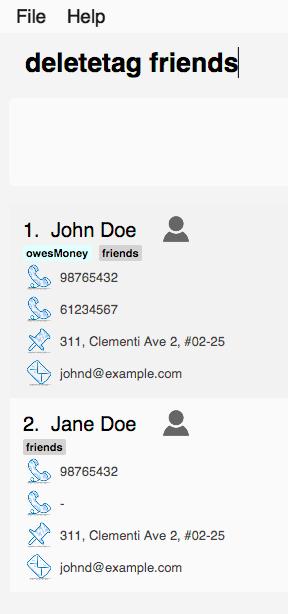

Project: Contact Plus
Contact Plus is a command-line based contact-managing application. This application allows you to manage your contact list on your computer. Also, Contact Plus can serve as a task managing application,
which allows you to record your upcoming appointments, events and tasks. We strive to provide comprehensive services for busy students as well as anyone who needs a contact-managing application.
[Functional code] [Test code] {give links to collated code files}
Enhancement Added: Delete Tag
External behavior
Start of Extract [from: User Guide]
Need to reorganize your social groups? deletetag enables you to delete tags from all your contacts in Contact Plus !
Command Format: deletetag tag_name
Quick demo: here
Examples
Your input |
Result |
|
Deletes the tag No action is performed if there is no tag named |
How to use
-
Type
deletetagfollowed by the name of the tag that you wish to delete. For example, we use the name "friends".
-
After hitting ENTER, the tag with the specified name is deleted from all contacts in
Contact Plus.
End of Extract
Justification
Enables users to reorganize their social circles. E.g. when a student has completed the module CS2101,
he/she could remove the tag CS2101 groupmate from all contacts in
Contact Plus as it is no longer applicable.
Implementation
Start of Extract [from: Developer Guide]
This mechanism is modelled by the DeleteTagCommand class. An instance of
DeleteTagCommand is created by the AddressBookParser class when the
user attempts to delete tags. The following sequence diagram shows the process from the
moment the user enters the deletetag command until the remaining tags
are displayed in the interface of Contact Plus.

The following code snippet shows how the DeleteTagCommand class
handles the user input - if there is no tag with the specified name, then
an error message is shown instead of a success message.
Prerequisites/Dependencies
-
The
deleteTag()method in model must be able to accept aTagas input and delete it from the address book.
Design Considerations
Aspect: Implementation of deletetag() command.
Alternative 1 (current choice): Delete the specified tag from all contacts in the address book.
Pros: Easy to implement.
Cons: If the user wishes to only remove that tag from one particular person. He has to re-add the tag
to every person who had that tag previously (except the one from which he wanted to remove the tag).
Alternative 2: Enable the user to choose several contacts from which he/she wishes to delete the tag.
Pros: User has more control over which users to remove the tag from. Hence, this implementation removes
the problem from alternative 1.
Cons: Implementation is more complex as contacts have to be validated before handling the tag names.
End of Extract
Enhancement Added: Autocomplete
External behavior
Start of Extract [from: User Guide]
Lazy to memorize command names? Press a shortcut key to automatically complete the text that you enter into the command box.
Command Format: [Some text]
Quick demo: here
This feature automatically completes/suggests names of commands.
To automatically fill in the format of commands, see extended autocomplete.
|
Examples
Your input |
Result |
|
Expands to |
|
Nothing is returned by |
|
Returns various command suggestions in the result pane. e.g. |
How to use
Enter some text into the command box (as shown below) and press TAB. Commands, whose names start with the text you typed, will be suggested in the result pane. See description for more details on how autocomplete works.

If there is only one command whose name starts with the text that you
entered, then the full name of the command will be automatically filled in for you.
For example, if you type h and press TAB, help will be filled into the command box.
|
End of Extract
Justification
Users may find it difficult ot remember the exact spelling of commands.
Some may feel that it is tiring to type the some of the long command names.
Autocomplete enables the automatic insertion of command names so that
the user is relieved of all these problems.
Implementation
Start of Extract [from: Developer Guide]
The autocomplete feature is implemented in AutoCompleteUtil class. It enables commands to be automatically suggested and
completed for users. For example, when the user types, "sea", and press TAB key, the complete command search appears on the command line. This feature saves time for users and improves the efficiency of the application in general.
It is invoked in subclasses of Logic (e.g. LogicManager).
The interaction between AutoCompleteUtil and Logic classes can be seen from the following sequence diagram:

As seen in the sequence diagram, Logic will get a list of all available commands from the AutoCompleteUtil class. Thereafter, it will pass
this list, together with the user’s input string, to the autoCompleteCommand() method in the AutoCompleteUtil class, which will
generate and return a list of suggested commands.
Prerequisites/Dependencies
-
The hotkey for launching
autocompleteis indicated in theCommandBoxclass. Currently, the hotkey is TAB. -
The
COMMAND_WORDfield must exist in the class file representing each command. -
The
COMMAND_WORDfield in each command class is defined as the string that is used to invoke that command. For example, "add" is theCOMMAND_WORDin theAddCommandclass and is used to invoke theaddoperation. -
The
COMMAND_WORDfor every command must be added to themapOfAvailableCommandsmap in theCommandclass. If the developer forgets to perform this step,AddressBookwill work normally but there will be no hints for those commands. -
Although
autocompletecurrently does not support autocompletion for aliases. TheCOMMAND_WORD_ALIASalias for every command, that has an alias, should be added to thelistOfCommandAliaseslist in theCommandclass for completeness and testing purposes. -
The logic for filtering matching commands is implemented in the
AutoCompleteUtilclass. This is shown in the following code snippet:

-
If the need arises to autocomplete other fields such as
name,addressandemail, another method should be implemented in theAutoCompleteUtilclass.
Design Considerations
Aspect: Implementation of autocomplete.
Alternative 1 (current choice): Add a list of names of available commands to Command class.
Pros: We do not need to care about how autocomplete works when adding new commands. We simply need to add the
COMMAND_WORD of new commands to the Command class and autocomplete will automatically use them for hints.
Furthermore, command names can be dynamically obtained via the COMMAND_WORD field for every command.
Cons: Additional level of dependency as the developer has to consistently update the Command class whenever
a new type of command is created.
Alternative 2: Place the COMMAND_WORD of all commands into a text file and read it when AddressBook starts.
Pros: No additional dependency among classes as AddressBook gets all command names from a text file rather
than obtaining them from the COMMAND_WORD field of each type of command.
Cons: The developer has to add the COMMAND_WORD of every new command to the text file.
Furthermore, there is repeated work (and higher risk of error) as the developer must take care to ensure that the text file’s entry corresponds with the
COMMAND_WORD field.
End of Extract
Enhancement Added: Extended Autocomplete
External behavior
Start of Extract [from: User Guide]
Try to save some time? Autocomplete is designed for you to operate efficiently on Contact Plus.Some commands such as add are very long and difficult to type.
This feature enables you to automatically fill in the format of the command whose name matches
the text that you entered.
Command Format: [COMMAND_WORD]
Quick demo: here
This feature automatically fills in the format of a correctly
spelt command. To automatically complete a command name, see autocomplete.
|
Examples
Your input |
Result |
|
expands to |
|
exapnds to |
|
|
|
|
|
|
How to use
-
Enter the full name of the command that you wish to use. For example,
add.
-
Press the Ctrl key. The command’s format is automatically filled in the command box for you. The help text, which explains how to use the command, is also displayed in the result pane.

-
Add any additional information (based on the help text) should be typed into the command bar.

-
Press ENTER. The result of the command is displayed in the result pane.

If you type the name of the command wrongly, extended autocomplete will not work.
|
End of Extract
Justification
While Autocomplete allows the automatic completion of command names,
users may also find it difficult to remember the format of every command.
extended autocomplete enables the user to automatically insert the format of
commands so that the user just needs to fill in his own information into the address book
without needing to remember anything related to the commands.
Implementation
Start of Extract [from: Developer Guide]
The extended autocomplete feature is an add-on to the autocomplete feature
and enables the full format of commands to be automatically filled into the command bar.
It is invoked in the LogicManager class.
Prerequisites/Dependencies
-
The hotkey for launching
extended autocompleteis indicated in theCommandBoxclass. Currently, the hotkey is Ctrl. The following excerpt briefly shows how theautocompletestring is determined based on theCommandentered by the user.
-
The
COMMAND_WORDandAUTOCOMPLETE_FORMATfields must exist in all class files that represent commands. -
For definition of
COMMAND_WORD, see this -
The
AUTOCOMPLETE_FORMATfield is defined as a string that contains the format of the command that is represented by the enclosing class. For example, iftestcommand has the format oftest positive_integerthenAUTOCOMPLETE_FORMATmust be defined astest positive_integerin theTestCommandclass. -
The
mapOfAvailableCommandsmap in theCommandclass must contain<command_class.COMMAND_WORD, command_class.AUTCOMPLETE_FORMAT>as<key, value>pairs. An example of such a pair is<AddCommand.COMMAND_WORD, AddCommand.AUTOCOMPLETE_FORMAT>. -
If the developer forgets to perform the above step,
AddressBookwill work normally but there will be no completion for those commands. -
extended autocompletecurrently does not support autocompletion for aliases.
Design Considerations
Aspect: Implementation of extended autocomplete.
Alternative 1 (current choice): Use a shortcut key to launch extended autocomplete when a valid COMMAND NAME
has been typed into the command bar.
Pros: It is easy to implement as we simply need to return a string based on the immediate user input. Furthermore, the autocomplete feature
complements this by enabling users to easily input a correct COMMAND_NAME.
Cons: The user cannot choose from the list of suggestions by Autocomplete. He still has to type/autofill a
single command name first before being able to use the shortcut for extended autocomplete.
Alternative 2: Allocate shortcut keys to select non-negative integers 0, 1, 2, 3 … Each integer will be used as an
index to select a specific command from the autocomplete list of suggestions.
Pros: Convenient for user to input any command as he only has to type its prefix partially before using autocomplete and
select the desired command using the shortcut for extended autocomplete.
Cons: Finite number of keys on the keyboard make it impossible to do a one-to-one mapping of shortcut keys to commands.
Furthermore, it is quite tricky to implement as using keys with printable characters will result in extra characters
being printed together with the string returned by extended autocomplete.
End of Extract
Locating persons by multiple criteria: multifilter [Since v1.1]
If you need to find persons whose names, phone no., emails and addresses,
match a set of specified criteria, multifilter will help you to do so.
Format: multifilter [n/NAME] [p/PHONE NO.] [e/EMAIL] [a/ADDRESS]
Quick demo: here
How to use
-
Enter
multifilterinto the command box followed by one or more format fields. See command format here. -
Press the ENTER key. The results are displayed based on the criteria that you have entered.

| If no filters are used, all contacts will be displayed. |
Examples
Your input |
Result |
|
Displays contacts whose address contain |
|
Displays all contacts because no filters were applied. |
|
Displays contacts who match ALL of the following criteria: 1. Name contains An example of a matching contact for this command would be |
|
Displays all contacts because |
End of Extract
Justification
The find command only allows the user to find contacts by name keyword(s). Multiple contacts could
have the same keyword(s). Furthermore, the user may not remember the contact’s name.
multifilter gives the user multiple choices to filter his contacts in such cases.
Implementation
Start of Extract [from: Developer Guide]
This mechanism is modelled by the MultiFilterCommand class. An instance of
MultiFilterCommand is created by the AddressBookParser class.
The following sequence diagram shows the process from the
moment the user enters the multifilter command until the results
are displayed in the interface of Contact Plus.

Prerequisites/Dependencies
-
The
clearFiltersOnPersonList()method in theModelclass must clear all filters in the filtered list of persons (i.e. show all elements in the list). -
The
updateFilteredPersonList()method in theModelclass must accept aPredicateas input and apply it on the filtered list of persons (i.e. the list will only show elements that match the condition specified by the givenPredicate).
Design Considerations
Aspect: Implementation of multifilter command.
Alternative 1 (current choice): Allow the user to enter any number of filter fields (e.g. name, email, address, etc.) in any order.
Pros: The user does not have to type unnecessary information (e.g. he/she does not have to specify a blank email if he/she just wants
to find a contact with a particular name).
Cons: Technically difficult to implement as missing filter fields have to be detected and handled appropriately.
Alternative 2: Only allow the user to filter by one criteria in a single command. E.g.
If the user wishes to filter by name and address, he/she has to filter by name then
by address (using 2 commands).
Pros: Very easy to implement as there is only one filter field to handle.
Cons: Requires multiple steps, which could be irritating and non-intuitive to the user.
End of Extract
Enhancement Added: List Tasks
External behavior
Start of Extract [from: User Guide]
This command enables you to retrieve personal tasks that you have stored in
Contact Plus.
Command Format: listtask
Quick demo: here
How to use
-
Click on the
Tasktab.
-
The user interface now shows a yellow text-area.

-
Type
listtaskinto the command box.
-
Hit the ENTER key. All your tasks will be displayed in the yellow text-area as shown below.

End of Extract
Justification
After adding tasks, Listtask allows the user to retrieve them.
Implementation
Start of Extract [from: Developer Guide]
This mechanism is modelled by the ListTaskCommand class. An instance of
ListTaskCommand is created by the AddressBookParser class when the
user attempts to list tasks. The following sequence diagram shows the process from the
moment the user enters the listtask command until the tasks
are displayed in the interface of Contact Plus.

Prerequisites/Dependencies
-
The
taskDisplayedvariable inCommandBoxmust be set to the instance of theBrowserPanelthat contains the sticky where the tasks are to be displayed. -
The
getFilteredTaskList()method inLogicclass must return a list ofReadOnlyTaskscontaining the tasks in the address book.
Design Considerations
Aspect: Implementation of listtask command.
Alternative 1 (current choice): List all the tasks in one sticky note.
Cons: When too many tasks are added, the tasks will look very clutterd when displayed.
Alternative 2: Use one sticky note to display each task.
Pros: Interface will look much neater.
Cons: Not scalable as it is not practical to generate a large number of sticky notes.
End of Extract
Enhancement Added: Delete Tasks
External behavior
Start of Extract [from: User Guide]
This command enables you to remove unnecessary/unwanted tasks from Contact Plus.
Command Format: deletetask INDEX_1/INDEX_2/INDEX_3 …
Quick demo: here
Examples
Your input |
Result |
|
Deletes task no. 1 from |
|
Deletes tasks no. 1 and 2 from |
|
An error message is shown as task numbers cannot be negative. |
How to use
-
Use the
listtaskcommand to display all your tasks. Note the number of the tasks that you wish to delete.
-
Type
deletetask INDEX_1/INDEX_2 …into the command box.
-
Hit the ENTER key. You will see the following success message if the command was successful.

-
Observe that the tasks that you have specified in the previous step have been deleted from
Contact Plus.
End of Extract
Justification
deletetask enables the user to organize his/her tasks in Contact Plus (i.e. he/she can delete
those that are no longer needed).
Implementation
Start of Extract [from: Developer Guide]
This mechanism is modelled by the DeleteTaskCommand class. An instance of
DeleteTaskCommand is created by the AddressBookParser class when the
user attempts to delete tasks. The following sequence diagram shows the process from the
moment the user enters the deletetask command until the remaining tasks
are displayed in the interface of Contact Plus.
Prerequisites/Dependencies
-
The
taskDisplayedvariable inCommandBoxmust be set to the instance of theBrowserPanelthat contains the sticky where the tasks are to be displayed. -
The
getFilteredTaskList()method inLogicclass must return a list ofReadOnlyTaskscontaining the tasks in the address book. -
The
deleteTask()method in model must be able to accept aReadOnlyTaskas input and delete it from the address book.
Design Considerations
Aspect: Implementation of DeleteTaskCommand.
Alternative 1 (current choice): Delete tasks from the address book every time the user executes the command to
delete task.
Pros: Don’t have to keep track of which tasks are no longer valid.
Cons: Causes overhead if the user repeatedly executes a command to delete tasks.
Alternative 2: Use lazy deletion (i.e. use a boolean array to mark which tasks are no longer valid) without
automatically displaying the remaining tasks. Only delete tasks when
the user chooses to list tasks.
Pros: Less overhead as deletion only has to be done when user chooses to list tasks.
Cons: Difficult to implement and causes a lot of technical issues such as updating the
list of tasks when the user closes the address book after deletion.
End of Extract
Enhancement Added: Sound effects for Commands
External behavior
Start of Extract [from: User Guide]
Sound effect is designed to help you to discern audibly whether your command is performed successfully or otherwise. Various sound clips are played for different system events to keep you informed of the status of your actions.
| This sound effect is enabled by Contact Plus by default. |
Example
Your input |
Result |
|
Success sound clip is played if command is successful. Failure sound clip is played if command is unsuccessful. |
Various sound clips are played for each system event to keep you informed of the status of your actions.
Example
Your input |
Result |
|
Success sound clip is played if command is successful. Failure sound clip is played if command is unsuccessful. |
End of Extract
Justification
Sound effects provide additional and clear feedback to the user about the outcome of his/her command.
Implementation
Start of Extract [from: Developer Guide]
This mechanism is implemented in the AudioUtil class. The static method
playClip(), which plays a specified .wav format sound clip, is invoked on the AudioUtil class when a command is issued by
the user. Distinct sound clips will be played based on whether the command
was successfully executed or it failed to execute (due to various reasons such
as parse error). A visualization of this is shown in the following sequence diagram:

The implementation of the playClip() method in the AudioUtil class is shown below:
Prerequisites/Dependencies
-
The audio file whose name is specified to the
playClip()method must exist in the src/resources/audio/ folder. -
The name of a .wav format audio clip should be provided to the
playClip()method as only this format has been tried and tested. Other audio file formats may/may not work.
Design Considerations
Aspect: Implementation of sound effects.
Alternative 1 (current choice): Play preset clips on command success or failure.
Pros: Easy to implement as the clips to be played are always the same and will only be played
during two events.
Cons: The sound clips are limited to two types - success or failure.
Alternative 2: Allow the user to select the command success and failure audio clips from
a predefined list.
Pros: User is able to have more personalized settings.
Cons: Technically challenging as additional commands have to be implemented to list
the available audio clips and select the desired ones.
End of Extract
Project: PowerPointLabs
{Optionally (not graded), you may include other projects in your portfolio.}